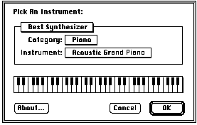
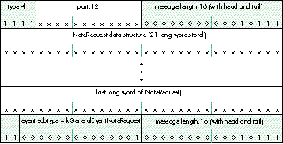
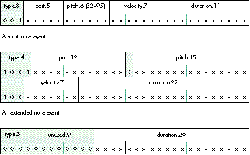
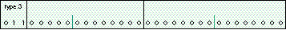
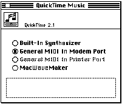

Music has become cheap and plentiful on the Macintosh, and many applications are now
making "casual" use of music. With the QuickTime Music Architecture, or QTMA,
including music in your application has never been simpler. Its API is straightforward
and easy to use, and you don't need intimate knowledge of MIDI protocols or channel and
voice numberings. Nor do you need an external MIDI device; QTMA can play music
directly out of the Macintosh's built-in speakers. And QTMA is widely available -- it's
on every Macintosh that has QuickTime 2.0 (or later) installed.
The QuickTime Music Architecture is perfect for adding a little bit of music to your
application. It has a set of well-supported high-level calls for playing musical notes
and sequences, it deals with MIDI protocols so that your application doesn't have to, and
it handles timing for entire tunes. With QTMA, you can specify musical instruments
independent of device, and play music either directly out of built-in speakers or
through a MIDI synthesizer.
QTMA first became available with QuickTime 2.0 and offers some new features in
QuickTime 2.1, which should be available through APDA by the time you read this. The
code in this article is written for version 2.1; minor changes will be required for 2.0.
(Before making use of the QuickTime 2.1 features, your code should call Gestalt with
the gestaltQuickTimeVersion selector and check the version number returned.)
This article shows how your application can use QTMA to play individual notes,
sequences of notes composed on the fly, or prescored sequences, and how to read input
from external MIDI devices. This issue's CD contains all the sample code and a THINK C
project to build and run it. We'll start with a look at QTMA in relation to other ways of
supporting music on the Macintosh; then we'll get down to business and play some
music with QTMA.
Support for MIDI and musical applications on the Macintosh platform has a somewhat
checkered history. Developers have been faced with such options as writing their own
serial drivers, using the MIDI Manager, or using third-party operating system
extensions such as the Open Music System (OMS, formerly Opcode MIDI System) and
the Free MIDI System (FMS) from Mark of the Unicorn. None of these are practical for
adding just a little music to your application.
Writing a serial driver to send MIDI output to an Apple MIDI adapter or to any
third-party MIDI adapter isn't that complicated if you enjoy writing low-level code to
access hardware registers on the SCC serial chip. I say this in all seriousness: that
kind of code really is fun to write! But it's not the best way to do things, because
changes in the OS and hardware can render your work useless. And writing the
low-level serial code for MIDI input has additional complexities, primarily because of
the interrupt timings in many parts of the Mac OS.
The MIDI Manager is a slightly better tool to use for MIDI input and output.
Unfortunately, Apple's support for this product has been less than consistent, and the
MIDI Manager itself has some inherent performance limitations, though these are less
critical on faster hardware (68030 processor or better).
Both OMS and FMS are quite appropriate for professional music scoring and editing
products. Among the facilities that these extensions provide is a "studio configuration";
this lets the user describe to the system the various MIDI devices attached to the
computer so that different applications can access them.
All of these options have drawbacks for making casual use of music: you have to access
an external MIDI device, which most users don't have, and you have to use MIDI
protocols to talk to that device. QTMA frees you from both of these constraints. It also
frees you from needing to know a lot about MIDI itself; if you want to know anyway,
check out the information in "A MIDI Primer."
______________________________
A MIDI PRIMER
MIDI, or Musical Instrument Digital Interface, uses a serial protocol and a
standard 5-pin connector that you'll find on professional electronic music
gear made after 1985 or so. The connector's relatively large size, about half
an inch in diameter, was chosen so that it could withstand the rigors of the
road -- in other words, so that even drummers could plug it in.
Because MIDI cables can carry signals in only one direction, synthesizers have
separate connectors for MIDI input and MIDI output. (This differs from modem
cables, which carry signals in both directions.)
MIDI is a serial protocol running at 31250 baud, 8 data bits, 1 stop bit, no
parity. The command structure for a MIDI stream is simple: each byte is
either a status byte or a data byte.
A status byte establishes a mode for interpreting the data bytes that follow it.
The high bit is set, and the next three bits indicate the type of status byte. The
low four bits are typically used to specify a MIDI channel. Thus MIDI can
address up to 16 unique channels, each of which may play a different musical
instrument sound. Later extensions to MIDI let you address more channels
through the use of escape codes and bank switching.
The most common status message is the Play Note message, which has a value
of 0x90 plus the MIDI channel number. Each note is defined by a pitch and
velocity. The pitch is an integer from 0 to 127, where 60 is musical middle C
(61 is C sharp, 59 is B, 72 is the C above middle C, and so on). The velocity is
an integer from 0 to 127 that describes how loud to play the note; 64 is
average loudness, 127 is very loud, 1 is nearly inaudible, and 0 means to stop
playing the note.
So, to play a C-major chord on MIDI channel 0, you send the seven bytes 0x90
0x3C 0x40 0x40 0x40 0x43 0x40 to begin the sound. After a suitable
interval, you send 0x90 0x3C 0x00 0x40 0x00 0x43 0x00 to silence it.
All of this is exactly the sort of stuff you don't need to know if you use the
QuickTime Music Architecture for your music-playing needs. But you just
can't know too many useless facts, right?
______________________________
QTMA is implemented in three easy pieces, as QuickTime components for playing
individual notes, playing tunes (sequences of notes), and driving MIDI devices.
Playing a few notes with the note allocator component is simple. To play notes that
have a piano-like sound, you need to open up the note allocator component, allocate a
note channel with a request for piano, and play. That's it! If you're feeling like a
particularly well-behaved software engineer, you might dispose of the note channel
and close the note allocator component when you're done. We'll get to the code in a
moment; first we'll look at some important related data structures.
NOTE-RELATED DATA STRUCTURES
A note channel is analogous to a sound channel in that you allocate it, issue commands to
it to produce sound, and close it when you're done. To specify details about the note
channel, you use a data structure called a NoteRequest (see Listing 1). The
NoteRequestInfo structure in the NoteRequest is new in QuickTime 2.1; it simply
encapsulates the first few fields of the old NoteRequest structure and splits the first of
those fields into two, flags andreserved (which are decribed in the documentation
accompanying the QuickTime 2.1 release).
Listing 1. Note-related data structures
struct NoteRequest {
NoteRequestInfo info; // * in post-QuickTime 2.0 only
ToneDescription tone;
};
struct NoteRequestInfo {
UInt8 flags;
UInt8 reserved;
short polyphony;
Fixed typicalPolyphony;
};
struct ToneDescription {
OSType synthesizerType;
Str31 synthesizerName;
Str31 instrumentName;
long instrumentNumber;
long gmNumber;
};
The next two fields specify the probable polyphony that the note channel will be used
for. Polyphony means, literally, many sounds. A polyphony of 5 means that five notes
can be playing simultaneously. The polyphony field enables QTMA to make sure that the
allocated note channel can play all the notes you'll need. The typicalPolyphony field is a
fixed-point number that should be set to the average number of voices the note channel
will play; it may be whole or fractional. Some music components use this field to
adjust the mixing level for a good volume.
The ToneDescription structure is used throughout QTMA to specify a musical
instrument sound in a device-independent fashion. This structure's synthesizerType
and synthesizerName fields can request a particular synthesizer to play notes on.
Usually, they're set to 0, meaning "choose the best General MIDI synthesizer." The
gmNumber field indicates the General MIDI (GM) instrument or drum kit sound,
which may be any of 135 such sounds that are supported by many synthesizer
manufacturers. (All these sounds are available on a General MIDI Sound Module.) The
GM instruments are numbered 1 through 128, and the seven drum kits are numbered
16385 and higher. A complete list of instrument and drum kit numbers is provided in
Table 1. For synthesizers that accept sounds outside the GM library, you can use the
instrumentName and instrumentNumber fields to specify some other sound.
Table 1. The General MIDI instruments and drum kits
|
|
|
|
||||||||||||||||||||||||||||||||||||||||||||||||||||||||||||||||||||||||||||||||||||||||||||||||||||||||||||
|
|
|
|
||||||||||||||||||||||||||||||||||||||||||||||||||||||||||||||||||||||||||||||||||||||||||||||||||||||||||||
|
|
|
|
||||||||||||||||||||||||||||||||||||||||||||||||||||||||||||||||||||||||||||||||||||||||||||||||||||||||||||
|
|
|
|
||||||||||||||||||||||||||||||||||||||||||||||||||||||||||||||||||||||||||||||||||||||||||||||||||||||||||||
|
|||||||||||||||||||||||||||||||||||||||||||||||||||||||||||||||||||||||||||||||||||||||||||||||||||||||||||||||
|
|||||||||||||||||||||||||||||||||||||||||||||||||||||||||||||||||||||||||||||||||||||||||||||||||||||||||||||||
THE NOTE-PLAYING CODE
The routine in Listing 2 plays notes in a piano-like sound with the note allocator
component. We start by calling OpenDefaultComponent to open up the component. If
this routine returns 0, the component wasn't opened, most likely because QTMA wasn't
present.
Listing 2. Playing notes with the note allocator component
void PlaySomeNotes(void)
{
NoteAllocator na;
NoteChannel nc;
NoteRequest nr;
ComponentResult thisError;
long t, i;
na = 0;
nc = 0;
// * Open up the note allocator.
na = OpenDefaultComponent(kNoteAllocatorType, 0);
if (!na)
goto goHome;
// * Fill out a NoteRequest using NAStuffToneDescription to help,
// * and allocate a NoteChannel.
nr.info.flags = 0;
nr.info.reserved = 0;
nr.info.polyphony = 2; // simultaneous tones
nr.info.typicalPolyphony = 0x00010000; // usually just one note
thisError = NAStuffToneDescription(na, 1, &nr.tone); // 1 is piano
thisError = NANewNoteChannel(na, &nr, &nc);
if (thisError || !nc)
goto goHome;
// If we've gotten this far, OK to play some musical notes.
// Lovely.
NAPlayNote(na, nc, 60, 80); // middle C at velocity 80
Delay(40, &t); // delay 2/3 of a second
NAPlayNote(na, nc, 60, 0); // middle C at velocity 0: end note
Delay(40, &t); // delay 2/3 of a second
// * Obligatory do-loop of rising tones
for (i = 60; i <= 84; i++) {
NAPlayNote(na, nc, i, 80); // pitch i at velocity 80
NAPlayNote(na, nc, i+7, 80); // pitch i+7 (musical fifth) at
// velocity 80
Delay(10, &t); // delay 1/6 of a second
NAPlayNote(na, nc, i, 0); // pitch i at velocity 0: end note
NAPlayNote(na, nc, i+7, 0); // pitch i+7 at velocity 0:
// end note
}
goHome:
if (nc)
NADisposeNoteChannel(na, nc);
if (na)
CloseComponent(na);
}
______________________________
ROGER SHEPARD'S MELODY
In Listing 2, if you replace the code in the section labeled "Obligatory do-loop
of rising tones" with the following code, you'll receive a secret treat.
i = 0;
while (!Button()) {
long j, v;
for (j = i % 13; j < 128; j+=13) {
v = j < 64 ? j * 2 : (127 - j) * 2;
NAPlayNote(na, nc, j, v);
}
Delay(13, &t);
for (j = i % 13; j < 128; j+=13)
NAPlayNote(na, nc, j, 0);
i++;
}
This snappy little melody was discovered by psychologist Roger Shepard in the
1960s.
______________________________
Next we fill in the NoteRequestInfo and ToneDescription structures, calling the note
allocator's NAStuffToneDescription routine and passing it the GM instrument number
for piano. This routine fills in the gmNumber field and also fills in the other
ToneDescription fields with sensible values, such as the instrument's name in text
form in the instrumentName field. (The routine can be useful for converting a GM
instrument number to its text equivalent.)
After allocating the note channel with NANewNoteChannel, we call NAPlayNote to play
each note. Notice the last two parameters to NAPlayNote:
ComponentResult NAPlayNote(NoteAllocator na, NoteChannel nc, long pitch, long velocity);
The value of the pitch parameter is an integer from 1 to 127, where 60 is middle C,
61 is C sharp, and 59 is C flat, or B. Similarly, 69 is concert A, and is played at a
nominal audio frequency of 440 Hz. The velocity parameter's value is also an integer
from 1 to 127, or 0. A velocity of 1 corresponds to just barely touching the musical
keyboard, and 127 indicates that the key was struck as hard as possible. Different
velocities produce tones of different volumes from the synthesizer. A velocity of 0
means the key was released; the note stops or fades out, as appropriate to the kind of
sound being played. Here we stop the notes after delaying an appropriate amount of
time with a call to the Delay routine.
Finally, being well behaved, we dispose of the note channel and close the note allocator
component.
LETTING THE USER PICK THE INSTRUMENT
Rather than specify the instrument sound itself, your application may want to let the
user pick it. For this purpose, a nifty instrument picker utility is provided in the note
allocator component. The instrument picker dialog, shown in Figure 1, enables users
to choose musical instruments from the available synthesizers and sounds.

Figure 1. The instrument picker dialog
The routine in Listing 3 shows one way that your application can use the instrument
picker. It's nearly identical to the code in Listing 2, except that the NAPickInstrument
routine is called right after the call to NAStuffToneDescription. As in Listing 1,
NAStuffToneDescription fills out a ToneDescription record for a particular GM
instrument number; NAPickInstrument then invokes the instrument picker dialog and
alters the passed ToneDescription to whatever instrument the user selects.
Listing 3. Using the instrument picker
void PickThenPlaySomeNotes(void)
{
... // * declarations and initialization
// * Open up the note allocator.
...
// * Fill out a NoteRequest using NAStuffToneDescription to help,
// * call NAPickInstrument, and allocate a NoteChannel.
nr.info.flags = 0;
nr.info.reserved = 0;
nr.info.polyphony = 2; // * simultaneous tones
nr.info.typicalPolyphony = 0x00010000;
thisError = NAStuffToneDescription(na, 1, &nr.tone); // 1 is piano
thisError = NAPickInstrument(na, nil, "\pPick An Instrument:",
&nr.tone, 0, 0, nil, nil);
if (thisError)
goto goHome;
thisError = NANewNoteChannel(na, &nr, &nc);
if (thisError || !nc)
goto goHome;
// Play some musical notes.
...
// Obligatory do-loop of rising tones
...
goHome:
... // Dispose of the NoteChannel and close the component.
}
ADDING EXPRESSIVENESS WITH CONTROLLERS
There's much more to music than simply playing the right notes at the right times.
Although your code can simulate only a scant fraction of the expressiveness of a
skillfully played acoustic instrument, there are certain things the note allocator
component lets you do that help make your computer-synthesized music sound more
interesting.
As we've already seen, the NAPlayNote routine has parameters for specifying pitch and
velocity, the latter determining the volume of the note; changes in these parameter
values can affect the expressiveness of your music. You can also add expressiveness to
whatever notes are being played by using QTMA's controllers. A controller is a
parameter that's set independently of the notes being played, with a call to the
NASetController routine:
ComponentResult NASetController(NoteAllocator na, NoteChannel nc, long controllerNumber, long controllerValue);
Two simple controllers are the pitch bend controller and the volume controller. The
pitch bend controller alters the frequency of any notes being played. It's like the
whammy-bar on an electric guitar, which tightens or loosens all the strings
simultaneously. The volume controller affects the sound of all notes similarly to the
way key velocity affects the sound of individual notes.
Let's look at some source code that uses the pitch bend controller (Listing 4). This
routine plays a major-fifth interval for a half second, "bends" it up by three
semitones, holds it a half second, and then bends it back down to its original pitch.
Listing 4. Using the pitch bend controller
void PlaySomeBentNotes(void)
{
... // declarations and initialization
// Open up the note allocator.
...
// Fill out a NoteRequest using NAStuffToneDescription to help, and
// allocate a NoteChannel.
...
// If we've gotten this far, OK to play some musical notes. Lovely.
NAPlayNote(na, nc, 60, 80); // middle C at velocity 80
NAPlayNote(na, nc, 67, 60); // G at velocity 60
Delay(30, &t);
// Loop through differing pitch bendings.
for (i = 0; i <= 0x0300; i+=10) { // bend 3 semitones
NASetController(na, nc, kControllerPitchBend, i);
Delay(1, &t);
}
Delay(30, &t);
for (i = 0x0300; i >= 0; i-=10) { // bend back to normal
NASetController(na, nc, kControllerPitchBend, i);
Delay(1, &t);
}
Delay(30, &t);
NAPlayNote(na, nc, 60, 0); // middle C off
NAPlayNote(na, nc, 67, 0); // G off
goHome:
... // Dispose of the NoteChannel and close the component.
}
Most QuickTime controller values are 16-bit signed fixed-point numbers (where the
lower eight bits are fractional) and have a range of 0 to 127, with a default value of 0.
However, the pitch bend controller has a range of -127 to 127, and the volume
controller has a default value of 127, or maximum volume.
The pan controller has a slightly different definition from the other controllers. "Pan"
refers to the position of the sound in the stereo field. Most synthesizers have audio
output for left and right; on such synthesizers, the pan value is interpreted as follows:
The default pan position (usually centered) is specified by a value of 0 to the pan
controller. To position the sound arbitrarily, values between 1 (0x0100) and 2
(0x0200) are used to range between left and right, respectively. For synthesizers
with n outputs, values between 1 and n are used to pan between each adjacent pair of
outputs. Note that the built-in synthesizer doesn't currently support panning.
As mentioned earlier, an application can use the tune player component to play entire
sequences of notes, or tunes. Applications often find it useful to play a tune that has
been precomposed and stored in the application; other times, it may be useful to
construct a tune at run time and then play it. In either case, the application must first
build the tune. Here we'll take a look at the format of a tune and the routines and
macros we use for building one.
THE FORMAT OF A TUNE
The format for tunes is a series of long words, subdivided into bitfields. Your
application needs to build a tune header and tune sequence made up of different types of
"events." The tune header contains one or more note request events, each a NoteRequest
data structure with some encapsulating long words. The tune sequence is made up of
note events that specify notes and durations, controller changes, and so on, as well as
rest events; it's the musical score.
In the tune header, each note request event has the structure shown in Figure 2. (It's
actually a general event, of the note request subtype.) Thus the first word is
0xFnnn0017, where nnn is the part number, and the last word is 0xC0010017. The
part number is referred to later on by note events in the tune sequence. For example,
given a header than contains a note request event specifying part 3, subsequent note
events that specify part 3 will play in a note channel allocated according to that
NoteRequest.

Figure 2. A note request event
In the tune sequence, each note event includes the part, pitch, velocity, and duration of
the note; a rest event specifies only a duration (see Figure 3). A note event can have
either a short or an extended format. In a short note event, the pitch is limited to the
range 32 to 95 (which covers most musical notes) and the part number must be less
than 32. If either of these ranges is too small, or if you want to use a fixed-point pitch
value or a very long duration, the extended note format may be used. Much of the time
you can use the short format, to save space.

Figure 3. Note and rest events
Both headers and sequences end with a marker event containing all zeroes (equivalent
to 0x60000000), shown in Figure 4.

Figure 4. A marker event
THE TUNE-BUILDING CODE
Our sample code includes routines for building the tune header and tune sequence.
These routines use some handy event-stuffing macros that are defined in the file
QuickTimeComponents.h, and all have the form _StuffSomething(arguments).
BuildTuneHeader (Listing 5) uses the following macro:
_StuffGeneralEvent(w1, w2, part, subtype, length);
The _StuffGeneralEvent macro fills in the head and tail long words of a particular type
of general event -- in our case, a note request event. Its arguments are, in order: the
head and tail long words; the part number; the event subtype
(kGeneralEventNoteRequest for a note request event); and the length in long words of
the entire event, counting the head and tail. Note that the first two arguments are the
head and tail themselves, not pointers -- the macro expands to a direct assignment of
these arguments.
Listing 5. BuildTuneHeader
#define kNoteRequestHeaderEventLength \
(sizeof(NoteRequest) /sizeof(long) + 2) // long words
#define our_header_length \
((2 * kNoteRequestHeaderEventLength + 1)) * sizeof(long) // bytes
unsigned long *BuildTuneHeader(void)
{
unsigned long *header, *w, *w2;
NoteRequest *nr;
NoteAllocator na; // just for the NAStuffToneDescription
call
ComponentResult thisError;
header = 0;
na = 0;
// Open up the note allocator.
na = OpenDefaultComponent(kNoteAllocatorType, 0);
if (!na)
goto goHome;
// Allocate space for the tune header, rather inflexibly.
header = (unsigned long *) NewPtrClear(our_header_length);
if (!header)
goto goHome;
w = header;
// Stuff request for piano polyphony 4.
w2 = w + kNoteRequestHeaderEventLength - 1; // last long word of
// note request event
_StuffGeneralEvent(*w, *w2, 1, kGeneralEventNoteRequest,
kNoteRequestHeaderEventLength);
nr = (NoteRequest *)(w + 1);
nr->info.flags = 0;
nr->info.reserved = 0;
nr->info.polyphony = 4; // simultaneous tones
nr->info.typicalPolyphony = 0x00010000;
// 1 is piano
thisError = NAStuffToneDescription(na, 1, &nr->tone);
w += kNoteRequestHeaderEventLength;
// Stuff request for violin polyphony 3.
w2 = w + kNoteRequestHeaderEventLength - 1; // last long word of
// note request event
_StuffGeneralEvent(*w, *w2, 2, kGeneralEventNoteRequest,
kNoteRequestHeaderEventLength);
nr = (NoteRequest *)(w + 1);
nr->info.flags = 0;
nr->info.reserved = 0;
nr->info.polyphony = 3; // simultaneous tones
nr->info.typicalPolyphony = 0x00010000;
// violin
thisError = NAStuffToneDescription(na, 41, &nr->tone);
w += kNoteRequestHeaderEventLength;
*w++ = 0x60000000; // end-of-sequence marker
goHome:
if (na)
CloseComponent(na);
return header;
}
BuildTuneSequence (Listing 6) uses the _StuffNoteEvent and _StuffRestEvent macros.
_StuffNoteEvent(w, part, pitch, volume, duration);
The _StuffNoteEvent macro fills in a note event. Its arguments are, in order: the long
_StuffXNoteEvent(w1, w2, part, pitch, volume, duration);
The _StuffXNoteEvent macro is for extended note events. It's identical to
_StuffNoteEvent except that it provides larger ranges for pitch, part, and duration,
and the event itself takes two long words.
_StuffRestEvent(w, restDuration);
The _StuffRestEvent macro fills in a rest event. It takes two arguments: the long word
to stuff and the duration of the rest.
Listing 6. BuildTuneSequence
#define kNoteDuration 240 // in 600ths of a second
#define kRestDuration 300 // in 600ths -- tempo will be 120 bpm
#define our_sequence_length (22 * sizeof(long)) // bytes
#define our_sequence_duration (9 * kRestDuration) // 600ths
unsigned long *BuildTuneSequence(void)
{
unsigned long *sequence, *w;
// Allocate space for the tune sequence, rather inflexibly.
sequence = (unsigned long *) NewPtrClear(our_sequence_length);
if (!sequence)
goto goHome;
w = sequence;
_StuffNoteEvent(*w++, 1, 60, 100, kNoteDuration); // piano C
_StuffRestEvent(*w++, kRestDuration);
_StuffNoteEvent(*w++, 2, 60, 100, kNoteDuration); // violin C
_StuffRestEvent(*w++, kRestDuration);
_StuffNoteEvent(*w++, 1, 63, 100, kNoteDuration); // piano
_StuffRestEvent(*w++, kRestDuration);
_StuffNoteEvent(*w++, 2, 64, 100, kNoteDuration); // violin
_StuffRestEvent(*w++, kRestDuration);
// Make the 5th and 6th notes much softer, just for fun.
_StuffNoteEvent(*w++, 1, 67, 60, kNoteDuration); // piano
_StuffRestEvent(*w++, kRestDuration);
_StuffNoteEvent(*w++, 2, 66, 60, kNoteDuration); // violin
_StuffRestEvent(*w++, kRestDuration);
_StuffNoteEvent(*w++, 1, 72, 100, kNoteDuration); // piano
_StuffRestEvent(*w++, kRestDuration);
_StuffNoteEvent(*w++, 2, 73, 100, kNoteDuration); // violin
_StuffRestEvent(*w++, kRestDuration);
_StuffNoteEvent(*w++, 1, 60, 100, kNoteDuration); // piano
_StuffNoteEvent(*w++, 1, 67, 100, kNoteDuration); // piano
_StuffNoteEvent(*w++, 2, 63, 100, kNoteDuration); // violin
_StuffNoteEvent(*w++, 2, 72, 100, kNoteDuration); // violin
_StuffRestEvent(*w++, kRestDuration);
*w++ = 0x60000000; // end-of-sequence marker
goHome:
return sequence;
}
It's important to understand that the duration of a sequence equals the total durations of
all the rest events. The durations within the note events don't contribute to the
duration of the sequence! If two note events occur in a row, each with a duration of say
100, they'll both start at the same time, not 100 time units apart. If the next event is
an end-of-sequence marker, the notes will immediately be stopped, having played for
zero time units. If, however, a rest event is placed between the note events and the end
marker, both notes will sound for the duration of the rest event, up to 100 time units.
Playing a tune with the tune player component is ideal if for some reason your
application will be constructing a tune at run time and then playing it. For prescored
music, however, the best solution is to create a QuickTime movie containing only a
music track and play it as a regular movie with the Movie Toolbox, as described below.
Using the tune player to play a tune without application intervention is
straightforward, as illustrated in Listing 7. After building the tune with
BuildTuneHeader and BuildTuneSequence, this routine opens up a connection to the tune
player component, calls TuneSetHeader with a pointer to the header information, and
then calls TuneQueue with a pointer to the sequence data. All the details of playback are
taken care of by the tune player. The tune will stop playing when it reaches the end or
when the tune player component is closed.
Listing 7. Playing a tune with the tune player component
void BuildSequenceAndPlay(void)
{
unsigned long *header, *sequence;
TunePlayer tp;
TuneStatus ts;
ComponentResult thisError;
tp = 0;
header = BuildTuneHeader();
sequence = BuildTuneSequence();
if (!header || !sequence)
goto goHome;
tp = OpenDefaultComponent(kTunePlayerType, 0);
if (!tp)
goto goHome;
thisError = TuneSetHeader(tp, header);
thisError = TuneQueue(tp, sequence, 0x00010000, 0, 0x7FFFFFFF,
0, 0, 0);
// Wait until the sequence finishes playing or the user clicks
// the mouse.
spin:
thisError = TuneGetStatus(tp, &ts);
if (ts.queueTime && !Button())
goto spin; // I use gotos primarily to shock the children.
goHome:
if (tp)
CloseComponent(tp);
if (header)
DisposePtr((Ptr) header);
if (sequence)
DisposePtr((Ptr) sequence);
}
The best way to play prescored music is to create a QuickTime movie with just a music
track and play it with the Movie Toolbox, which takes care of details like spooling
multiple segments of sequence data from disk. This is currently the only way to create
QuickTime music that will also play under QuickTime for Windows. There are many
tools for authoring music into Standard MIDI Files, which are then easily imported as
QuickTime movies -- but first let's look at the more hard-core method of creating
your own sequence and header data and saving it as a QuickTime movie.
CREATING A QUICKTIME MUSIC TRACK
Creating a QuickTime music track is exactly the same as creating any other kind of
track. You create or open the movie you're adding the track to, and then add a new track
and a new media followed by a sample description and the sample data. For a music
track, the sample description is the tune header information, and the data is one or
more tune sequences. The routine in Listing 8 constructs a QuickTime movie with a
music track and saves it to disk.
Listing 8. Creating a QuickTime music track
void BuildMusicMovie(void)
{
ComponentResult result;
StandardFileReply reply;
short resRefNum;
Movie mo;
Track tr;
Media me;
unsigned long *tune, *header;
MusicDescription **mdH, *md;
StandardPutFile("\pMusic movie file name:", "\pMovie File",
&reply);
if (!reply.sfGood)
goto goHome;
EnterMovies();
// Create the movie, track, and media.
result = CreateMovieFile(&reply.sfFile, 'TVOD', smCurrentScript,
createMovieFileDeleteCurFile, &resRefNum, &mo);
if (result)
goto goHome;
tr = NewMovieTrack(mo, 0, 0, 256);
me = NewTrackMedia(tr, MusicMediaType, 600, nil, 0);
// Create a music sample description.
header = BuildTuneHeader();
mdH = (MusicDescription **)
NewHandleClear(sizeof(MusicDescription) - 4 +
our_header_length);
if (!mdH)
goto goHome;
md = *mdH;
md->descSize = GetHandleSize((Handle) mdH);
md->dataFormat = kMusicComponentType;
BlockMove(header, md->headerData, our_header_length);
DisposePtr((Ptr) header);
// Get a tune, add it to the media, and then finish up.
tune = BuildTuneSequence();
result = BeginMediaEdits(me);
result = AddMediaSample(me, (Handle) &tune, 0,
our_sequence_length, our_sequence_duration,
(SampleDescriptionHandle) mdH, 1, 0, nil);
result = EndMediaEdits(me);
result = InsertMediaIntoTrack(tr, 0, 0, our_sequence_duration,
(1L<<16));
result = OpenMovieFile(&reply.sfFile, &resRefNum, fsRdWrPerm);
result = AddMovieResource(mo, resRefNum, 0, 0);
result = CloseMovieFile(resRefNum);
DisposePtr((Ptr) tune);
DisposeMovie(mo);
goHome:
ExitMovies();
}
IMPORTING A STANDARD MIDI FILE AS A MOVIE
Most music content exists in a format called Standard MIDI File (SMF). All sequencing
and composition programs have an option to Save As or Export files to this format.
QuickTime has facilities for reading an SMF file and easily converting it into a
QuickTime movie. (QuickTime 2.1 corrects some critical bugs in the 2.0 converter.)
During any kind of conversion, the SMF file is assumed to be scored for a General MIDI
device, and MIDI channel 10 is assumed to be a drum track.
The conversion to a QuickTime movie can happen in several ways. Because the
conversion is implemented in a QuickTime 'eat ' component, it very often will happen
automatically. Any application that uses the StandardGetFile routine to open a movie
can also open 'Midi' files transparently, and can transparently paste Clipboard
contents of type 'Midi' into a movie that's shown with the standard movie controller. To
explicitly convert a file or handle into a movie, an application can use the Movie
Toolbox routines ConvertFileToMovieFile and PasteHandleIntoMovie, respectively.
For those of you who are hard-core MIDI heads, the following two MIDI
system-exclusive messages, new in QuickTime 2.1, may be useful for more precise
control of the MIDI import process. (Note that QuickTime data is divided into media
samples. Within video tracks, each video frame is considered one sample; in music
tracks, each sample may contain several seconds worth of musical information.)
Applications can define their own system-exclusive messages of the form F0
11 7F ww xx yy zz ... application-defined data ... F7, where ww xx yy zz is the
application's unique signature with the high bits cleared. This is guaranteed
not to interfere with Apple's or any other manufacturer's use of
system-exclusive codes.*
If the user has a MIDI keyboard attached to the computer, your application can use it as
an input device by calling QTMA routines that capture each event as the user triggers
it.
The default MIDI input is whichever MIDI port the user has chosen for a General MIDI
device from the QuickTime Music control panel, shown in Figure 5. (The default MIDI
input can also be specified with the NASetDefaultMIDIInput call in the note allocator,
but this call should be made only by music-configuration software, such as the control
panel.)

Figure 5. The QuickTime Music control panel
An application can receive MIDI events from the default MIDI input by installing a
readHook routine. This routine is called at interrupt level whenever MIDI data
arrives. It's installed with the NAUseDefaultMIDIInput call (and later deinstalled with
NALoseDefaultMIDIInput).
pascal ComponentResult NAUseDefaultMIDIInput(NoteAllocator na, MusicMIDIReadHookUPP readHook, long refCon, unsigned long flags);
The readHook routine is defined as follows:
typedef pascal ComponentResult (*MusicMIDIReadHookProcPtr) (MusicMIDIPacket *mp, long myRefCon);
When the readHook routine is called, it's passed its refCon (installed with the routine)
and a pointer to the MIDI packet. The MIDI packet structure is simply a list of bytes of
a MIDI message, preceded by a length:
struct MusicMIDIPacket {
unsigned short length;
unsigned long reserved;
UInt8 data[249];
};
The length field is the number of bytes in the MIDI message. (If you're familiar with
the MIDI Manager definition of a MIDI packet or with OMS's packet, note that their
length field is different from this one: Theirs is the length of both the header and the
packet data, so the minimum length would be 6; but in QuickTime's packets, the length
field is only the number of bytes of MIDI data actually in the data array.)
In QuickTime 2.0, the reserved field must be set to 0, but in QuickTime 2.1, this field
takes on some additional meanings (as reserved fields occasionally do). When an
application is using the default MIDI input, it may occasionally lose the use of that
input, such as when another application tries to use it, or if the instrument picker
dialog box comes to the front. If the use of the input is lost, the reserved field will have
the value kMusicPacketPortLost = 1, and the length field will be 0: no MIDI data. When
the port is once again available, the readHook routine will receive a packet with the
reserved field set to kMusicPacketPortFound = 2, also with no data.
The data array in the MIDI packet contains a raw MIDI message that your readHook
routine will have to parse. Our example code parses only the MIDI messages for
note-on events and note-off events; other messages, such as pitch-bend controls, are
simply ignored.
The note-on event message has three bytes, 9c pp vv (in hexadecimal), where c is the
MIDI channel that the musical keyboard is transmitting on, pp is a MIDI pitch from 0
to 127 (60 is middle C), and vv is the velocity with which the key was struck, from 1
to 127. If the velocity is 0, the message signifies a note-off event. Some devices,
however, use a separate message type for note-off events; it has the form 8c pp vv,
where c and pp are the channel and pitch, and vv is the velocity with which the key was
released. Nobody in the world pays attention to the release velocity, so in our example
we won't either. When an 8c message is received, we'll just set the velocity to 0 and
pretend it was a 9c message.
Listing 9 shows a readHook routine and the routine that installs it. The main routine,
UseMIDIInput, allocates a note channel and then calls NAUseDefaultMIDIInput,
specifying a readHook routine that parses note-on or note-off event messages. These
messages are expanded into a chord that's played on the note channel. Any packet that
isn't of that type -- that is, doesn't contain three bytes or start with 0x8n or 0x9n --
is ignored.
Listing 9. Parsing MIDI messages in the readHook routine
pascal ComponentResult AReadHook(MusicMIDIPacket *mp, long refCon)
{
MIDIInputExample *mie;
Boolean major;
short status, pitch, vel;
mie = (MIDIInputExample *)refCon;
if (mp->reserved == kMusicPacketPortLost) // port gone? make
// channel quiet
NASetNoteChannelVolume(mie->na, mie->nc, 0);
else if (mp->reserved == kMusicPacketPortFound) // port back?
// raise volume
NASetNoteChannelVolume(mie->na, mie->nc, 0x00010000);
else if (mp->length == 3) {
status = mp->data[0] & 0xF0;
pitch = mp->data[1];
vel = mp->data[2];
switch (status) {
case 0x80:
vel = 0;
// Falls into case 0x90.
case 0x90:
major = pitch % 5 == 0;
NAPlayNote(mie->na, mie->nc, pitch, vel);
NAPlayNote(mie->na, mie->nc, pitch+3+major, vel);
NAPlayNote(mie->na, mie->nc, pitch+7, vel);
break;
}
}
return noErr;
}
void UseMIDIInput(void)
{
ComponentResult result;
MIDIInputExample mie;
NoteRequest nr;
mie.na = OpenDefaultComponent(kNoteAllocatorType, 0);
if (!mie.na)
goto goHome;
nr.polyphony = 2;
nr.typicalPolyphony = 0x00010000;
result = NAStuffToneDescription(mie.na, 1, &nr.tone);// piano
result = NANewNoteChannel(mie.na, &nr, &mie.nc);
result = NAUseDefaultMIDIInput(mie.na, AReadHookUPP,
(long) &mie, 0)
while (!Button());
result = NALoseDefaultMIDIInput(mie.na);
goHome:
if (mie.na)
CloseComponent(mie.na); // disposes of NoteChannel, too
}
Sometimes a little music can make your application easier and more fun to use. Adding
music doesn't have to be a complex task; QTMA takes care of all the hard parts, like
using MIDI protocols, so you can concentrate more on the music itself. So go ahead,
play some tunes and enjoy the music!
DAVID VAN BRINK lives in a tiny experimental habitat overlooking the Denny's
parking lot in Santa Cruz, California. He experiences life at 14,400 bits per second.
See http://www.srm.com for more information.*
Thanks to our technical reviewers Peter Hoddie, Duncan Kennedy, Jim Nitchals, Jim
Reekes, and Kent Sandvik.*